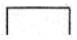
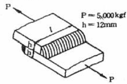
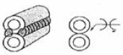
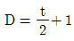
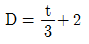
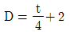

용접산업기사 (2009-07-26 기출문제)
1과목: 용접야금 및 용접설비제도
1. 잔류 응력 제거 방법으로서 용접선의 양측을 가스 불꽃으로 너비 약 150㎜에 걸쳐서 150~200℃로 가열한 다음 곧 수냉하는 방법은?
- 기계적 응력 완화법
- 피닝법
- 저온 응력 완화법
- 확산 풀림법
(정답률: 89%)

2. 피복 아크 용접시 용융 금속 중에 침투한 산화물을 제거하는 탈산제로 쓰이지 않는 것은?
- 망간철
- 규소철
- 산화철
- 티탄철
(정답률: 62%)
3. 맞대기 용접 이음의 가접 또는 첫층에서 루트 근방의 열영향부에서 발생하여 점차 비드속으로 들어가는 균열은?
- 토 균열
- 루트 균열
- 세로 균열
- 크레이터 균열
(정답률: 69%)
4. 포정반응 설명으로 가장 적합한 것은?
- 하나의 고용체에 다른 액체가 작용하여 다른 고용체를 형성하는 반응
- 2종 이상의 물질이 고체 상태로 완전히 융합되는 것
- 하나의 액체에서 고체와 다른 종류의 액체를 동시에 형성하는 반응
- 하나의 액체를 어떤 온도로 냉각시키면서 동시에 2개 또는 그 이상의 종류의 고체를 생기게 하는 반응
(정답률: 47%)
5. 면심입방격자(FCC)에서 단위격자 중에 포함되어 있는 원자의 수는 몇 개 인가?
- 2
- 4
- 6
- 8
(정답률: 74%)
6. 철강의 용접시 열 영향부에 대한 설명으로 틀린 것은?
- 탄소의 함량이 많을수록 경화 현상이 발생하기 쉽다.
- 오스테나이트까지 가열된 조직은 급냉으로 마텐자이트 조직이 된다.
- 조직이 마텐자이트가 되면 경도가 증가한다.
- 조직이 마텐자이트가 되면 연신율이 증가한다.
(정답률: 57%)
7. 주철의 용접성으로 틀린 것은?
- 수축이 많아 균열이 생기기 쉽다.
- 일산화탄소 가스가 발생하여 용착금속에 기공 발생이 적다.
- 500~600℃의 예열 및 후열이 필요하다.
- 주철 속에 기름, 흙, 모래 등이 있는 경우에 용착이 불량하거나 모재와의 친화력이 나쁘다.
(정답률: 62%)
8. 일반적인 금속 원자의 단위 결정격자의 종류가 아닌 것은?
- 체심입방격자
- 정밀입방격자
- 면심입방격자
- 조밀육방격자
(정답률: 65%)
9. 저수소계 피복 아크 용접봉의 건조 조건으로 가장 적절한 것은?
- 70~100℃, 1시간
- 200~250℃, 30분
- 300~350℃, 1~2시간
- 400~450℃, 30분
(정답률: 85%)
10. 금속을 가열한 다음 급속히 냉각시켜 재질을 경화시키는 열처리 방법은?
- 풀림
- 뜨임
- 불림
- 담금질
(정답률: 66%)
11. 다음 용접기호의 설명으로 옳은 것은?

- 플러그 용접
- 뒷면 용접
- 스폿 용접
- 심 용접
(정답률: 94%)
12. 치수 기입 방법에서 치수선과 치수 보조선에 대한 설명으로 틀린 것은?
- 치수선과 치수 보조선은 가는 실선으로 긋는다.
- 치수선은 원칙적으로 치수 보조선을 사용하여 긋는다.
- 치수선은 원칙적으로 지시하는 길이 또는 각도를 측정하는 방향으로 평행하게 긋는다.
- 치수 보조선은 지시하는 치수의 끝에 해당하는 도형상의 점 또는 선의 중심을 지나 치수선에 평행으로 긋는다.
(정답률: 60%)
13. 도면의 보관방법 및 출고에 대한 설명으로 가장 거리가 먼 것은?
- 원도는 화재나 수해로부터 안전하도록 방재 처리를 한 도면 보관함에 격리하여 보관한다.
- 도면 보관함에는 도면번호, 도면크기 등을 표시하여 사용이 쉽게 한다.
- 복사도에는 출고용 도장을 찍지 않아도 사용이 가능 하며, 도면이 심하게 파손되었을 때는 현장에서 즉시 태워 버린다.
- 원도는 도면을 변경하고자 하는 이외에는 출고하지 않으며, 곧바로 생산 현장에 출고할 때는 복사도를 출고한다.
(정답률: 90%)
14. 도면의 분류에서 내용에 따른 분류에 해당하지 않는 것은?
- 전개도
- 부품도
- 기초도
- 조립도
(정답률: 42%)
15. 대상물의 보이지 않는 부분을 표시하는데 쓰이는 선의 종류는?
- 굵은 실선
- 가는 파선
- 가는 실선
- 가는 이점쇄선
(정답률: 67%)
16. 경사면부가 있는 대상물에서 그 경사면의 실형을 나타낼 필요가 있는 경우에 그리는 투상도는?
- 보조투상도
- 부분투상도
- 국부투상도
- 회전투상도
(정답률: 58%)
17. 국가 및 기구에 대한 규격기호를 틀리게 연결한 것은?
- 국제표준화기구 - ISO
- 미국 - USA
- 일본 - JIS
- 스위스 - SNV
(정답률: 75%)
18. CAD 인터페이스 종류 중 소프트웨어 인터페이스가 아닌 것은?
- GKS(Graphical Kernel System)
- IGES(Initial Graphics Exchange Specifition)
- RS-232C
- DXF(Date Exchange File)
(정답률: 73%)
19. 용접 기본기호 중 맞대기 이음 용접 기호가 아닌 것은?
- Ⅱ
- V
- Y
- L
(정답률: 84%)
20. 정 투상법에서 제3각법은 (①) → (②) → (③) 순서로 투상한다. ( )속의 번호에 들어갈 용어로 맞는 것은?
- ①눈, ②물체, ③투상면
- ①눈, ②투상면, ③물체
- ①물체, ②눈, ③투상면
- ①투상면, ②물체, ③눈
(정답률: 57%)
2과목: 용접구조설계
21. 용접 전 예열을 하는 목적에 대한 설명으로 틀린 것은?
- 용접부와 인접된 모재의 수축 응력을 증가시키기 위하여 예열을 실시한다.
- 임계온도를 통과하여 냉각될 때 냉각속도를 느리게 하여 열영향부와 용착 금속의 경화를 방지하고 연성을 높여준다.
- 약 200℃의 범위를 통과하는 시간을 지연시켜 용착 금속내의 수소의 방출 시간을 줌으로서 비드 밑 균열을 방지한다.
- 온도 분포가 완만하게 되어 열응력의 감소로 변형과 잔류응력 발생을 적게 한다.
(정답률: 77%)
22. 특수한 구면상의 선단을 갖는 해머(hammer)로 용접부를 연속적으로 타격해줌으로써 표면의 소성변형을 주어 잔류응력을 제거하는 방법은?
- 기계적 응력 완화법
- 저온 응력 완화 법
- 피닝법
- 응력제거 풀림법
(정답률: 96%)
23. 맞대기 용접 및 필릿 용접 이음시 각 변형을 교정할 때 이용하는 이면담금질 방법은?
- 점가열법
- 송엽가열법
- 선상가열법
- 격자가열법
(정답률: 57%)
24. 연강의 맞대기 용접 이음에서 용착 금속의 기계적 성질 중 인장강도가 40 kgf/mm2, 안전율이 5라면 용접이음의 허용응력(kgf/mm2)은 얼마인가?
- 0.8
- 8
- 20
- 200
(정답률: 78%)
25. 자기 탐상 검사가 되지 않는 금속재료의 용접부 표면 검사법으로 가장 적합한 것은?
- 외관 검사
- 침투 탐상 검사
- 초음파 탐상 검사
- 방사선 투과 검사
(정답률: 44%)
26. 필릿 용접 이음의 수축 변형에서 모재가 용접선에 각을 이루는 경우를 각(角)변형이라고 하는데, 각(角)변형과 같이 쓰이는 용어는?
- 가로 굽힘
- 세로 굽힘
- 회전 굽힘
- 원형 굽힘
(정답률: 64%)
27. 인장시험 결과 시험편의 파단 후의 단면적 20mm2 이고 원단면적 25mm2일 때 단면수축률은?
- 20%
- 30%
- 40%
- 50%
(정답률: 62%)
28. 용접경비를 작게 하고자 할 때 유의할 사항으로 가장 관계가 먼 것은?
- 용접봉의 적절한 선정과 그 경제적 사용방법
- 재료 절약을 위한 방법
- 용접 지그의 사용에 의한 위보기 자세의 이용
- 용접사의 작업 능률의 향상
(정답률: 93%)
29. 그림과 같은 겹치기 이음의 필릿 용접을 하려고 한다. 허용응력을 5kgf/mm2라 하고 인장하중을 5000 kgf, 판두께 12㎜ 이라고 할 때, 필요한 용접 유효 길이는 약 몇 ㎜인가?

- 83
- 73
- 69
- 59
(정답률: 29%)
30. 용접 이음을 설계할 때 주의사항이 아닌 것은?
- 가급적 아래보기 용접을 많이 하도록 한다.
- 용접 작업에 지장을 주지 않도록 공간을 두어야 한다.
- 용접 이음을 한쪽으로 집중되게 접근하여 설계하지 않도록 한다.
- 맞대기 용접은 될 수 있는 대로 피하고 필릿 용접을 하도록 한다.
(정답률: 89%)
31. 설계 단계에서의 일반적인 용접 변형 방지법 중 틀린 것은?
- 용접 길이가 감소 될 수 있는 설계를 한다.
- 용착 금속을 감소시킬 수 있는 설계를 한다.
- 보강재 등 구속이 작아지도록 설계를 한다.
- 변형이 적어질 수 있는 이음 부분을 배치한다.
(정답률: 62%)
32. 동일한 길이를 용접하는 경우라도 판 두께, 용접 자세, 작업장소 등이 변동되면 용접에 소요하는 작업량도 변하게 되는데 이 작업량에 영향을 주는 것을 각기 계수로 표시하고 이 계수를 실제의 용접길이에 곱한 것을 무슨 용접길이라고 하는가?
- 도면상의 용접길이
- 환산 용접길이
- 돌림 용접길이
- 가공 후 용접길이
(정답률: 67%)
33. 다음 그림과 같은 용접이음의 형상기호 종류는?

- 필릿용접 x형
- 플러그용접 K형
- 모서리용접 V형
- 플레어용접 X형
(정답률: 84%)
34. 용접 시공에 의한 변형 경감법에 해당 되지 않는 것은?
- 대칭법
- 후진법
- 스킵법
- 도열법
(정답률: 65%)
35. 용접부에 발생하는 기공(blow hole)이나 피트(pit)와 같은 결함의 원인이 될 수 없는 것은?
- 이음부에 녹이나 이물질 부착
- 용접봉 건조 불량
- 용접 홈 각도의 과대
- 용접속도의 과대
(정답률: 64%)
36. 가용접(tack welding)시 주의해야 할 사항이 아닌 것은?
- 본 용접자와 동등한 기량을 갖는 용접자가 가용접을 시행할 것
- 본 용접과 같은 온도에서 예열을 할 것
- 가용접 위치는 부품의 끝 모서리나 각 등과 같이 응력이 집중되는 곳을 피할 것
- 용접봉은 본 용접 작업시에 사용하는 것보다 약간 굵은 것을 사용할 것
(정답률: 86%)
37. 용접구조물의 수명과 가장 관련이 있는 것은?
- 작업 태도
- 아크 타임율
- 피로 강도
- 작업율
(정답률: 85%)
38. 용접이음 중에서 접합하는 2부재 사이에서 양쪽 면에 홈을 파고 용접하는 양쪽면 홈이음 형은?
- I형 홈
- J형 홈
- H형 홈
- V형 홈
(정답률: 69%)
39. 레이저 용접장치의 기본형에 속하지 않는 것은?
- 고체 금속형
- 가스 방전형
- 반도체형
- 에너지형
(정답률: 44%)
40. 용접변형 방지법에서 역변형법의 설명에 해당 되는 것은?
- 공작물을 가접 또는 지그로 고정하여 변형의 발생을 방지하는 법
- 용접 금속 및 모재의 수축에 대하여 용접 전에 반대 방향으로 굽혀 놓고 용접 작업하는 법
- 비드를 좌우대칭으로 놓아 변형을 방지하는 법
- 용접 진행 방향으로 뜀 용접을 하여 변형을 방지 하는 법
(정답률: 87%)
3과목: 용접일반 및 안전관리
41. 교류 아크 용접기 부속장치 중 아크 발생시 용접봉이 모재에 접촉하지 않아도 아크가 발생되는 것은?
- 핫 스타트장치
- 원격 제어장치
- 전격 방지장치
- 고주파 발생장치
(정답률: 63%)
42. 아세틸렌이 접촉하면 화합물을 만들어 맹렬한 폭발성을 가지게 되는 것이 아닌 것은?
- Fe
- Cu
- Ag
- Hg
(정답률: 49%)
43. 피복 아크 용접시 아크 길이가 너무 길 때 발생하는 현상이 아닌 것은?
- 스패터가 심해진다.
- 용입 불량이 나타난다.
- 아크가 불안정 된다.
- 용융 금속이 산화 및 질화되기 어렵다.
(정답률: 86%)
44. 교류 용접기에서 무부하 전압 80V, 아크전압 25V, 아크전류 300A 이며, 내부손실 3㎾라 하면 이때 용접기의 효율은 약 몇 % 인가?
- 71.4
- 70.1
- 68.3
- 66.7
(정답률: 42%)
45. 교류 용접기에 역률 개선용 콘덴서를 사용하였을 때의 이점(利點) 설명으로 틀린 것은?
- 입력 kVA가 많아지므로 전력 요금이 싸진다.
- 전원 용량이 적어도 된다.
- 배전선의 재료가 절감된다.
- 전압 변동율이 적어진다.
(정답률: 60%)
46. 스터드 용접(Stud welding)법의 특징 중 잘못된 것은?
- 아크열을 이용하여 자동적으로 단시간에 용접부를 가열 용융하여 용접하는 방법으로 용접변형이 극히 적다.
- 대체적으로 모재가 급열, 급냉되기 때문에 저탄소강에 용접하기가 좋다.
- 용접 후 냉각속도가 비교적 느리므로 용착 금속부 또는 열영향부가 경화되는 경우가 적다.
- 철강 재료 외에 구리, 황동, 알루미늄, 스테인리스강에도 적용이 가능하다.
(정답률: 48%)
47. TIG, MIG, 탄산가스 아크 용접시 사용하는 차광렌즈 번호는?
- 12 ~ 13
- 8 ~ 10
- 6 ~ 7
- 4 ~ 5
(정답률: 84%)
48. 아크 용접용 로봇에 사용되는 것으로 동작기구가 인간의 팔꿈치나 손목 관절에 해당하는 부분의 움직임을 갖는 것으로 회전 → 선회 → 선회운동을 하는 로봇은?
- 극 좌표 로봇
- 관절 좌표 로봇
- 원통 좌표 로봇
- 직각 좌표 로봇
(정답률: 81%)
49. 두 개의 모재에 압력을 가해 접촉시킨 후 회전시켜 발생하는 열과 가압력을 이용하여 접합하는 용접법은?
- 스터드 용접
- 마찰용접
- 단조용접
- 확산용접
(정답률: 85%)
50. 탄산가스 아크 용접에 관한 설명 중 틀린 것은?
- MIG 용접과 같이 비철금속, 스테인리스강을 쉽게 용접 할 수 있다.
- MIG 용접에서 불활성 가스 대신 탄산가스를 사용한다.
- 전자동 용접과 반자동 용접이 주로 이용되고 있다.
- MIG 용접에 비하여 비드 표면이 깨끗하지 못하다.
(정답률: 48%)
51. 아세틸렌가스의 설질에 대한 설명으로 틀린 것은?
- 순수한 아세틸렌가스는 무색, 무취의 기체이다.
- 각종 액체에 잘 용해되며 알코올에는 25배가 용해된다.
- 비중이 0.906 으로 공기보다 약간 가볍다.
- 산소와 적당히 혼합하여 연소시키면 약 3000~3500℃의 높은 열을 낸다.
(정답률: 50%)
52. 산업용 용접 로봇의 일반적인 분류에 속하지 않는 것은?
- 지능 로봇
- 시퀸스 로봇
- 평행좌표 로봇
- 플레이백 로봇
(정답률: 34%)
53. 용접구조물의 제작에 가장 많이 사용되는 대표적인 용접이음의 종류에 해당 되는 것으로만 구성된 것은?
- 맞대기 이음, 필릿 이음
- 수직 이음, 원형 이음
- I 형 이음, J형 이음
- 플러그 이음, 슬롯 이음
(정답률: 90%)
54. 불활성 가스 텅스텐 아크 용접의 직류 역극성 용접에서 사용 전류의 크기에 상관없이 정극성 때보다 어떤 전극을 사용하는 것이 좋은가?
- 가는 전극 사용
- 굵은 전극 사용
- 같은 전극 사용
- 전극에 상관없음
(정답률: 64%)
55. 가스 용접 토치에 대한 설명 중 틀린 것은?
- 토치는 손잡이, 혼합실 ,팁으로 구성되어 있다.
- 가스 용접 토치는 사용되는 산소 가스의 압력에 따라 저압식, 중압식, 고압식으로 분류된다.
- 토치의 구조에 따라 불변압식과 가변압식으로 분류한다.
- 불변압식 토치는 분출 구멍의 크기가 일정하고 팁의 능력도 일정하기 때문에 불꽃의 능력을 변경할 수 없다.
(정답률: 36%)
56. 전극 물질이 일정할 때 모재와 용접봉 사이의 아크전압에 대한 설명으로 맞는 것은?
- 전류의 증가와 더불어 감소한다.
- 아크의 길이와 더불어 증가한다.
- 아크의 길이에 관계없다.
- 전류의 증가와 더불어 증가한다.
(정답률: 41%)
57. 용접 설비의 점검 및 유지에 관한 설명 중 틀린 것은?
- 회전부와 가동부분에 윤활유가 없도록 한다.
- 용접기가 전원에 잘 접속되어 있는가를 확인한다.
- 전환 탭은 사포를 사용해서 깨끗이 청소한다.
- 용접기는 습기나 먼지 많은 곳에 설치하지 않도록 한다.
(정답률: 72%)
58. 가스용접에서 판 두께를 t(㎜)라면 용접봉의 지름 D(㎜)를 구하는 식으로 옳은 것은? (단, 모재의 두께는 1㎜ 이상인 경우이다.)
- D=t+1



(정답률: 86%)
59. 피복 아크용접에서 용융 금속의 이행 형식에 속하지 않는 것은?
- 단락형
- 스프레이형
- 글로뷸러형
- 라액터형
(정답률: 75%)
60. 피복아크 용접에 비해 가스 용접의 장점이 아닌 것은?
- 가열할 때 열량 조절이 비교적 자유롭다.
- 가열범위가 커서 용접응력이 크다.
- 전원설비가 없는 곳에서도 쉽게 설치할 수 있다.
- 유해 광선의 발생이 적다.
(정답률: 63%)